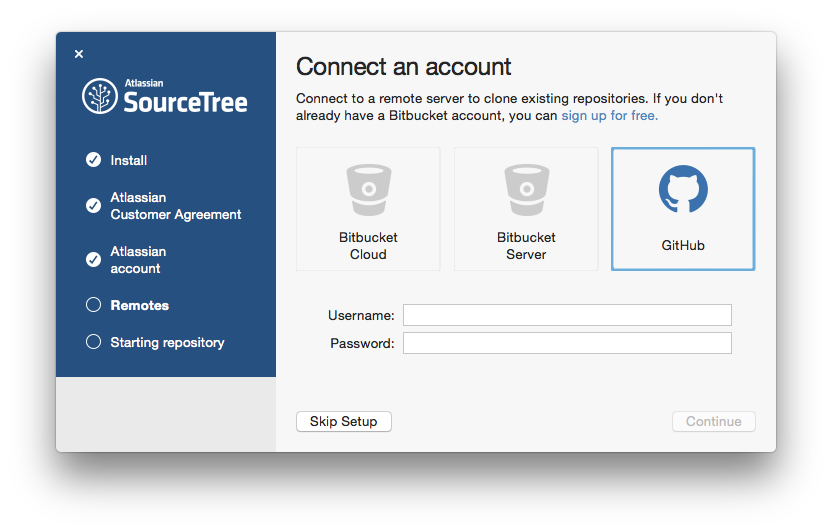
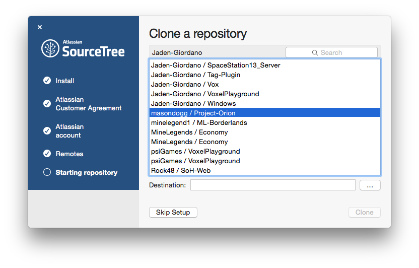
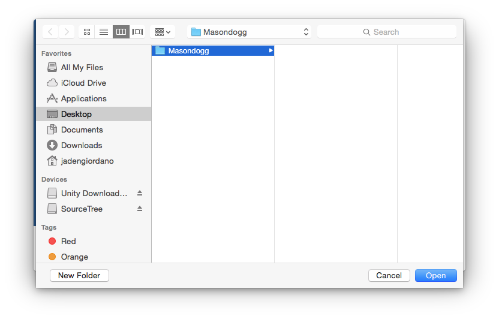
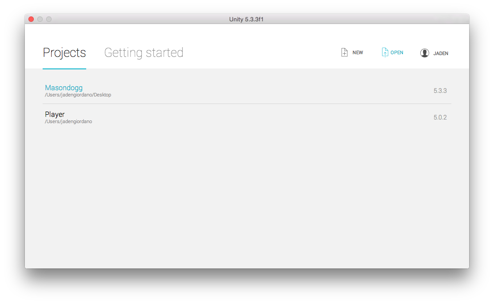
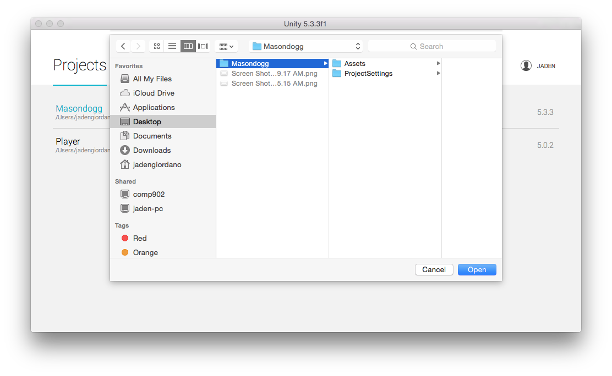

Downloading and Installing Source Tree
Setting up Project in Unity
Pushing, Pulling, and Committing
Source Tree can be downloaded here: Source Tree Download
Once downloaded and installed, create an account or log in with Google. After logging in on the website and creating your license, return to the application and you should be able to continue. Click continue and you will be prompted with connecting a github account.
Use your Github login credentials to connect you Github account. Click continue then you will be prompted to clone a repository (repo), choose masondogg/Project-Orion and select a destination to save the repo to (best place would be a floder on your desktop or in your unity project folder), as shown here...
 Click clone to continue, it will add the repo to your computer, now its time to get everything onto your computer. Double click the Project-Orion repo to open up the Git Ui panel. Then click on 'master' under 'Branches' on the left-side menu, then click 'pull'
Open up Unity and click 'Open', go to the location of the folder you set for the repo, and select it (double click it). Unity should take care or the rest.
 Throughout your use of Github Collaboration you will become very fond of Pushing, Pulling, and Committing. The difference between the three and there uses are as follows:
Pulling: As you've already learned to get the files from Github to your computer you had to 'pull', thats what this does, e.g. if someone mad a change and put it up then you would 'pull' to get those changes.
Committing: Committing is how you update your changes in the SourceTree Application, or a way of commenting on your changes and putting them into a timeline.
Pushing: After committing you will 'push' to upload your changes (commit) to the Github servers.